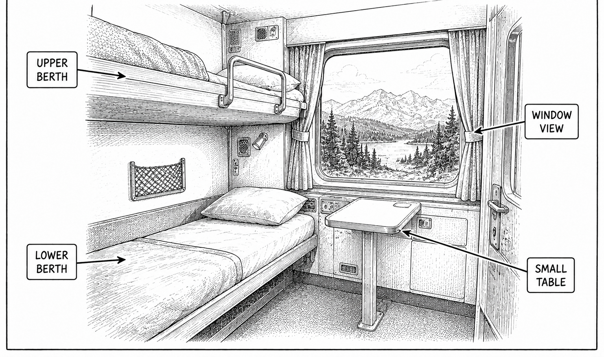

Primary real example
The Man in Seat 61
VIA Rail The Canadian sleeper accommodations.
Open the original exampleShot 47 | Day 10 | September 26 | VIA Rail The Canadian
Reference links for this shot.

These examples stay on their original sites. No photographer images are copied into this guide.
Primary real example
VIA Rail The Canadian sleeper accommodations.
Open the original example